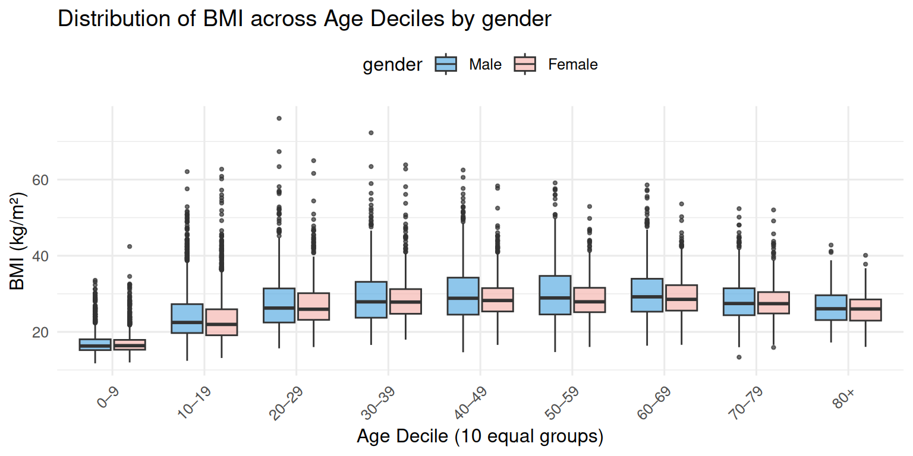
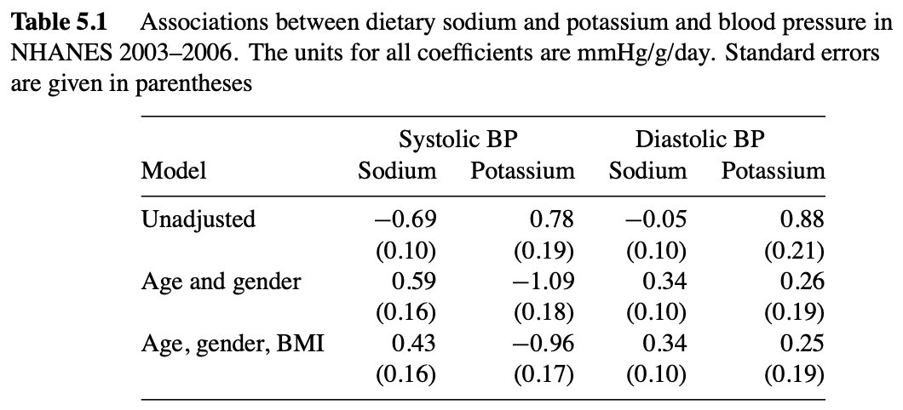
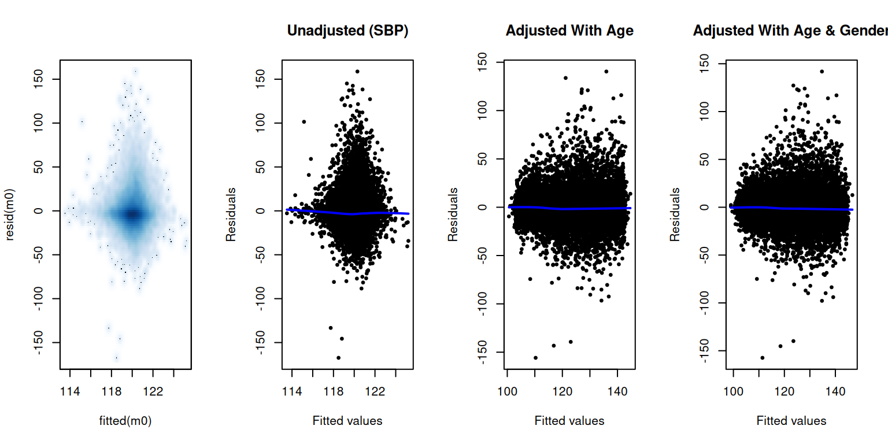
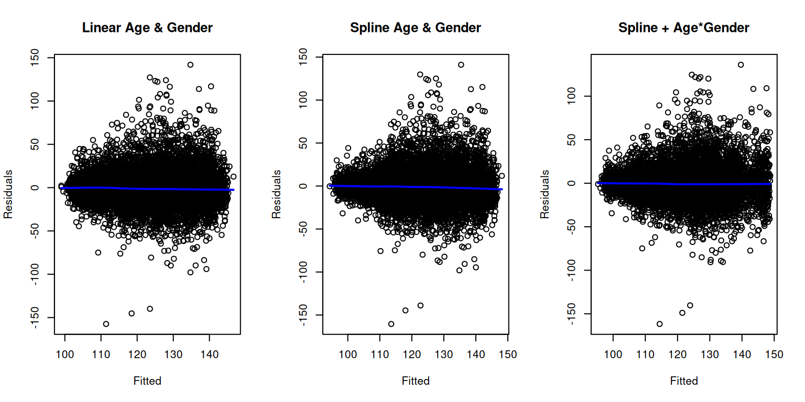
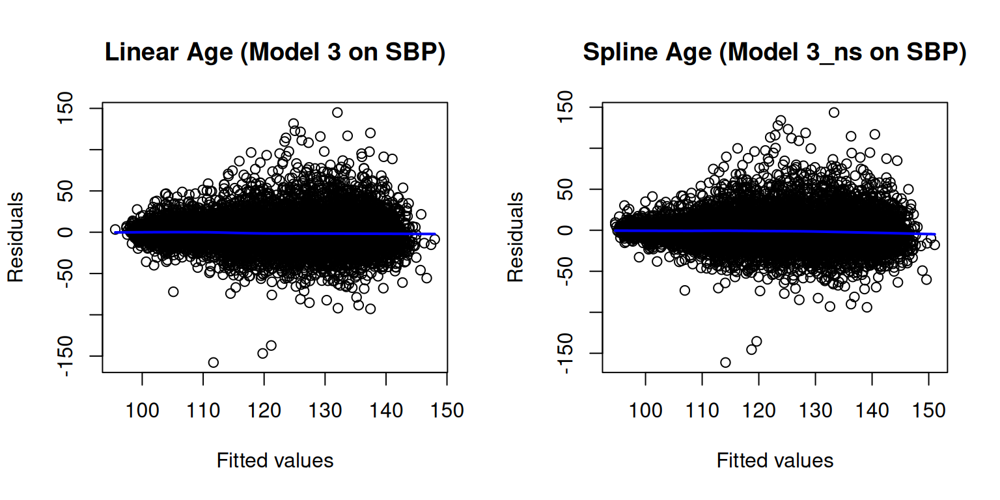
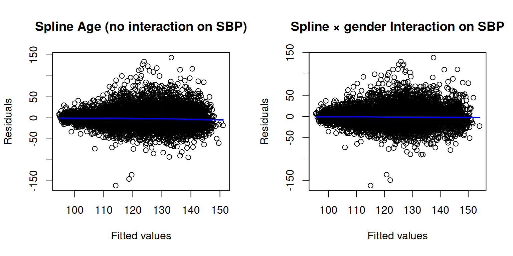
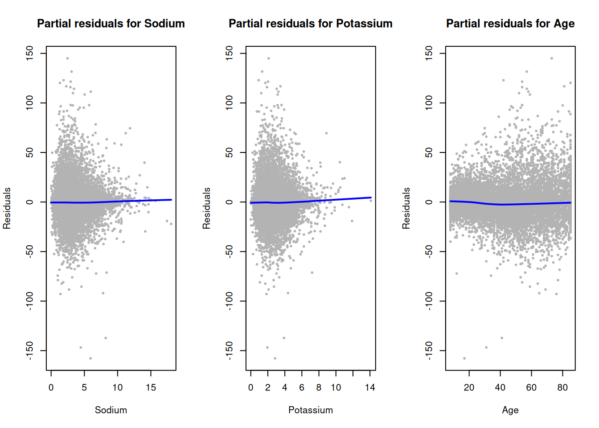
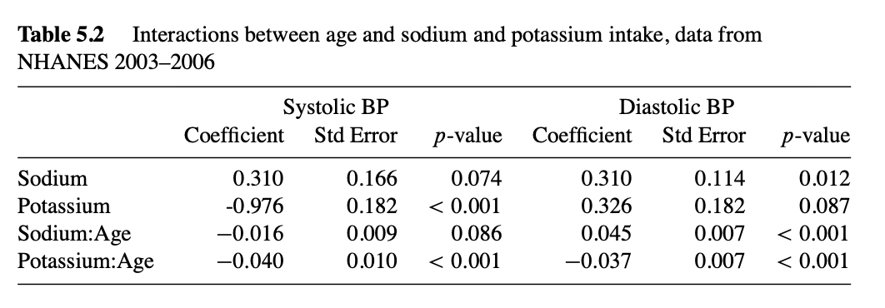

library(phonto) # Epiconnector tools for reproducible NHANES access
library(nhanesA) # Interface to NHANES public datasets
library(survey) # Complex survey analysis
library(dplyr) # Data wrangling
library(tidyr) # Data wranglingNHANES 2003–2006: Sodium, Potassium, and Blood Pressure
A Survey-Weighted Regression Example with phonto
1. Introduction
In this vignette, we reproduce and extend a textbook analysis of the relationship between dietary sodium, dietary potassium, and blood pressure using NHANES data from 2003–2006.
Our primary goals are to demonstrate reproducible analysis workflows using the Epiconnector ecosystem and the NHANES Docker instance, ensuring that every step—from data retrieval to model fitting—can be replicated without manual downloads.
Specifically, we show how to:
- Retrieve and merge NHANES datasets programmatically using the Epiconnector tools (
phontoandnhanesA) within the Docker environment. - Apply the appropriate survey weights to account for NHANES’s complex sampling design.
- Fit survey-weighted regression models to estimate associations between nutrient intake and systolic/diastolic blood pressure.
- Compare the reproduced results with those presented in the textbook to validate reproducibility.
For background on what NHANES is and how to access it reproducibly, readers are referred to the companion paper:
Laha Ale, Robert Gentleman, Christopher Endres, Sam Pullman, Nathan Palmer, Rafael Goncalves, and Deepayan Sarkar. (in press). Enhancing Statistical Analysis of Real World Data.
(Available as
NHANESpaper.Rmdin thephontovignettes.)
That paper provides an overview of the Epiconnector framework and demonstrates how NHANES data can be accessed and analyzed reproducibly within a Docker environment.
This vignette complements it by reproducing a textbook example to illustrate how the Epiconnector–Docker setup supports transparent and reproducible epidemiologic analysis.
2. Packages
We begin by loading the packages required for data extraction, processing, and analysis.
phontoandnhanesA: provide programmatic access to NHANES variables and allow flexible queries across cycles.survey: provides tools for creating complex survey designs and fitting weighted regression models.
3. Data Sources
The textbook example uses NHANES 2003–2006, combining two 2-year cycles (2003–2004 [C] and 2005–2006 [D]), which we reproduce here using Epiconnector for fully programmatic access. To reproduce the textbook faithfully while keeping the workflow reproducible, we query the original NHANES tables by cycle and retain only the variables used downstream, always by name (no numeric indexing).
DEMO (both cycles)
We keep the 12 design and demographic fields needed for survey weighting and covariates:SEQN, RIAGENDR, RIDAGEYR, WTINT2YR, WTMEC2YR, SDMVPSU, SDMVSTRA.BPX (both cycles)
Blood pressure outcomes (BPXSARfor systolic,BPXDARfor diastolic) are used when present. To mirror the textbook, for D-cycle records that lack pre-averaged values we compute means from the replicate readings (BPXSY1–4,BPXDI1–4) withna.rm = TRUE. The replicate columns are retained solely for this computation/QC.BMX (both cycles)
We keepSEQNandBMXBMIas the obesity covariate.DR1TOT (both cycles)
We retain the dietary Day-1 weightWTDRD1and the sodium/potassium intake variablesDR1TSODIandDR1TPOTA(later expressed in g/day). These are the only DR1TOT fields used in analysis.
After cycle-level retrieval, we harmonize columns, row-bind C and D, and derive analysis variables: sodium and potassium in g/day and a four-year weight fouryearwt = WTDRD1 / 2. This mirrors the textbook while aligning with our reproducible pipeline (name-based keeps, minimal variables, and explicit handling of D-cycle BP means).
Code: declare the targets we will keep (for the upcoming extraction/wrangling)
# --- Keep lists by *names*, minimal set for analysis ---
# DEMO: exact 12 variables (C and D)
DEMO_keep <- c("SEQN","RIAGENDR","RIDAGEYR",
"WTINT2YR","WTMEC2YR","SDMVPSU","SDMVSTRA")
# BPX: only what's needed for analysis + manual averages for 2005–06 if missing
BPX_keep <- c(
"SEQN",
"BPXSAR","BPXDAR", # precomputed (present in 2003–04; may be NA in 2005–06)
"BPXSY1","BPXSY2","BPXSY3","BPXSY4", # raw systolic repeats
"BPXDI1","BPXDI2","BPXDI3","BPXDI4" # raw diastolic repeats
)
BPX_keep_D <- setdiff(BPX_keep, c("BPXSAR","BPXDAR"))
# BMX: SEQN + BMI (C and D)
BMX_keep <- c("SEQN","BMXBMI")
# DR1TOT: keep only what we actually use
# - WTDRD1: dietary day 1 weight (textbook uses this, then /2 for four-year)
# - DR1TSODI, DR1TPOTA: sodium & potassium (mg/day)
DR1TOT_keep <- c("SEQN","WTDRD1","DR1TSODI","DR1TPOTA")
# For downstream checks
DIET_named_vars <- c("DR1TSODI","DR1TPOTA")
# ---- jointQuery() column map (follow quick_start line ~224 pattern) ----
cols_c <- list(DEMO_C = DEMO_keep,
BPX_C = BPX_keep,
BMX_C = BMX_keep,
DR1TOT_C = DR1TOT_keep)
cols_d <- list(DEMO_D = DEMO_keep,
BPX_D = BPX_keep_D,
BMX_D = BMX_keep,
DR1TOT_D = DR1TOT_keep)
# Will then use：
# data <- jointQuery(cols)4. Data Extraction
We retrieve the four domains (DEMO, BPX, BMX, DR1TOT) for each NHANES cycle and let the database do the joins. Following the textbook while keeping the pipeline reproducible, our workflow is:
For each cycle, declare a name-based keep list (no numeric indexing) and call the tables by their cycle-tagged names (e.g.,
DEMO_C,BPX_D).Use a single database call to join within cycle by
SEQN, producing one tidy file per cycle:nhanes34(C) andnhanes56(D).Do not perform transformations here. Unit conversions and the four-year weight are created in the next section. For the D cycle only, we compute
BPXSAR/BPXDARfrom replicate readings when the pre-averaged values are absent, matching the textbook’s approach.
4.1. Cycle C (2003–2004)
For the C cycle we select the textbook columns for DEMO, keep BMI from BMX, and keep the BP outcomes along with their replicates. We then perform a single database join on SEQN to obtain nhanes34, a cycle-level analytic file ready for later stacking.
# Cycle C (2003–2004): pull and merge with jointQuery
nhanes34 <- jointQuery(cols_c)4.2. Cycle D (2005–2006)
For the D cycle we use the same keep lists, but the BP table may lack pre-averaged outcomes. After joining by SEQN to create nhanes56, we compute BPXSAR and BPXDAR from the four replicate readings (BPXSY1–4, BPXDI1–4, using na.rm = TRUE) only when needed. This defers all other transformations to the preprocessing section and keeps the extraction logic parallel across cycles.
# Cycle D (2005–2006): pull and merge with jointQuery and add BPXSAR, BPXDAR
nhanes56 <- jointQuery(cols_d)
nhanes56$BPXSAR <- rowMeans(nhanes56[, c("BPXSY1", "BPXSY2", "BPXSY3", "BPXSY4")],
na.rm = TRUE)
nhanes56$BPXDAR <- rowMeans(nhanes56[, c("BPXDI1", "BPXDI2", "BPXDI3", "BPXDI4")],
na.rm = TRUE)5. Data Cleaning and Preprocessing
In this section, we harmonize the C and D cycle files and prepare analysis-ready fields. We stack the cycle-level datasets (nhanes34 and nhanes56) to mirror the textbook workflow, then derive key variables for sodium, potassium, and the four-year dietary weight.
# Combine C and D cycles
nhanes <- rbind(nhanes34, nhanes56)
# Derive analysis variables
nhanes$sodium <- nhanes$DR1TSODI / 1000
nhanes$potassium <- nhanes$DR1TPOTA / 1000
nhanes$fouryearwt <- nhanes$WTDRD1 / 2
# Remove records with missing dietary weights before creating the survey design
nhanes <- subset(nhanes, !is.na(WTDRD1))
# Remove extreme BMI outlier (~130)
nhanes <- subset(nhanes, is.na(BMXBMI) | BMXBMI < 80)Finally, we remove records with missing WTDRD1 values before creating the survey design, following the survey package requirement that weights be non-missing.
Note: Dietary weights (WTDRD1) are only available for participants who completed the dietary recall interview, which typically excludes younger children. Therefore, by restricting the dataset to records with valid WTDRD1, younger participants are implicitly filtered out. This ensures that our analytic sample corresponds to the population eligible for dietary assessment in NHANES.
5.1 Cohort Description Table
To summarize the analytic cohort, we construct a descriptive table using the tableone package. This “Descriptive Table” reports key demographic and analytic variables — age, gender, BMI, dietary sodium and potassium, and systolic blood pressure — stratified by gender. Such tables are standard in epidemiologic reporting and allow us to verify sample representativeness before model fitting.
## Descriptive Table 1
## Publication-style summary of analytic variables by gender (NHANES 2003–2006)
library(dplyr)
library(knitr)
library(kableExtra)
# Build continuous summary: mean ± SD
cont_summary <- nhanes |>
group_by(RIAGENDR) |>
summarise(
N = n(),
`Age (yrs), mean ± SD` = sprintf("%.1f ± %.1f", mean(RIDAGEYR, na.rm = TRUE), sd(RIDAGEYR, na.rm = TRUE)),
`BMI (kg/m²), mean ± SD` = sprintf("%.1f ± %.1f", mean(BMXBMI, na.rm = TRUE), sd(BMXBMI, na.rm = TRUE)),
`Sodium (mg/day), mean ± SD` = sprintf("%.0f ± %.0f", mean(sodium, na.rm = TRUE), sd(sodium, na.rm = TRUE)),
`Potassium (mg/day), mean ± SD` = sprintf("%.0f ± %.0f", mean(potassium, na.rm = TRUE), sd(potassium, na.rm = TRUE)),
`Systolic BP (mmHg), mean ± SD` = sprintf("%.1f ± %.1f", mean(BPXSAR, na.rm = TRUE), sd(BPXSAR, na.rm = TRUE))
) |>
rename(gender = RIAGENDR)
# Add overall row
overall <- nhanes |>
summarise(
N = n(),
`Age (yrs), mean ± SD` = sprintf("%.1f ± %.1f", mean(RIDAGEYR, na.rm = TRUE), sd(RIDAGEYR, na.rm = TRUE)),
`BMI (kg/m²), mean ± SD` = sprintf("%.1f ± %.1f", mean(BMXBMI, na.rm = TRUE), sd(BMXBMI, na.rm = TRUE)),
`Sodium (mg/day), mean ± SD` = sprintf("%.0f ± %.0f", mean(sodium, na.rm = TRUE), sd(sodium, na.rm = TRUE)),
`Potassium (mg/day), mean ± SD` = sprintf("%.0f ± %.0f", mean(potassium, na.rm = TRUE), sd(potassium, na.rm = TRUE)),
`Systolic BP (mmHg), mean ± SD` = sprintf("%.1f ± %.1f", mean(BPXSAR, na.rm = TRUE), sd(BPXSAR, na.rm = TRUE))
) |>
mutate(gender = "All") |>
select(gender, everything())
tab_cont <- bind_rows(overall, cont_summary) |>
mutate(gender = recode(gender, `1` = "Male", `2` = "Female"))
# Dummy categorical summary – replace with true categories if present
cat_summary <- data.frame(
Category = c("gender, n (%)", " Male", " Female"),
All = c(nrow(nhanes),
sum(nhanes$RIAGENDR == 1, na.rm = TRUE),
sum(nhanes$RIAGENDR == 2, na.rm = TRUE)),
Male = c("-", "-", "-"),
Female = c("-", "-", "-")
)
# Merge continuous and categorical sections for layout
tab_display <- tab_cont |>
rename(`Variable` = gender) |>
mutate(`Variable` = c("All", "Male", "Female")) |>
select(`Variable`, everything())
# Create the formatted table
kbl(
tab_display,
caption = "Descriptive characteristics of the analytic sample (NHANES 2003–2006).",
booktabs = TRUE,
align = "lcccccc",
label = "descriptive"
) |>
kable_styling(
bootstrap_options = c("striped", "condensed"),
full_width = FALSE,
font_size = 11,
position = "center"
) |>
row_spec(0, bold = TRUE, align = "center") |>
add_header_above(c(" " = 1, "Summary Statistics" = 6), bold = TRUE, line = TRUE) |>
pack_rows("Demographic and Clinical Characteristics", 1, 3, bold = TRUE, italic = FALSE) |>
footnote(
general = "Values are mean ± SD unless otherwise indicated. BP = blood pressure.",
general_title = "Note: ",
threeparttable = TRUE
)| Variable | N | Age (yrs), mean ± SD | BMI (kg/m²), mean ± SD | Sodium (mg/day), mean ± SD | Potassium (mg/day), mean ± SD | Systolic BP (mmHg), mean ± SD |
|---|---|---|---|---|---|---|
| Demographic and Clinical Characteristics | ||||||
| All | 18382 | 28.9 ± 24.5 | 25.2 ± 7.3 | 3 ± 2 | 2 ± 1 | 118.3 ± 19.2 |
| Male | 9370 | 28.9 ± 24.2 | 25.5 ± 7.8 | 3 ± 1 | 2 ± 1 | 116.8 ± 20.5 |
| Female | 9012 | 28.8 ± 24.7 | 24.8 ± 6.8 | 3 ± 2 | 3 ± 1 | 119.9 ± 17.5 |
| Note: | ||||||
| Values are mean ± SD unless otherwise indicated. BP = blood pressure. | ||||||
As shown in Table @ref(tab:descriptive), which provides a descriptive overview of the analytic cohort and allows us to verify that the NHANES participants included in the analysis are representative of the target population. It also serves as a baseline comparison across gender, showing expected demographic and dietary differences — for example, higher mean sodium and potassium intake among males. Such descriptive tables ensure transparency and reproducibility prior to model fitting.
5.2 Exploratory Visualization: Age and BMI Distributions
To further visualize sample characteristics before model fitting, we examined the joint distribution of age and BMI. We divided the cohort into 10 equal age groups (deciles) and plotted BMI distributions for males and females separately. This exploratory plot helps detect nonlinear or interaction patterns that may justify flexible modeling terms such as splines or age × gender interactions.
## Exploratory visualization: Age–BMI relationship by gender
library(ggplot2)
# Create age groups by decades (0–10, 10–20, ..., up to 80+)
nhanes <- nhanes |>
mutate(age_group = cut(
RIDAGEYR,
breaks = seq(0, 90, by = 10),
include.lowest = TRUE,
right = FALSE,
labels = c("0–9", "10–19", "20–29", "30–39", "40–49",
"50–59", "60–69", "70–79", "80+")
))
# Boxplot: BMI vs age decile by gender
ggplot(nhanes, aes(x = age_group, y = BMXBMI, fill = factor(RIAGENDR))) +
geom_boxplot(outlier.size = 0.8, alpha = 0.7) +
scale_fill_manual(
values = c("#5DADE2", "#F5B7B1"),
name = "gender", labels = c("Male", "Female")
) +
labs(
title = "Distribution of BMI across Age Deciles by gender",
x = "Age Decile (10 equal groups)",
y = "BMI (kg/m²)"
) +
theme_minimal(base_size = 12) +
theme(
legend.position = "top",
axis.text.x = element_text(angle = 45, hjust = 1)
)

As shown in Figure @ref(fig:exploratory-boxplots), BMI tends to increase with age up to midlife, with males showing slightly higher medians across most age deciles.
At older ages, both genderes display greater variability and a mild plateauing of median BMI, suggesting potential nonlinearity and heteroscedasticity in the age–BMI relationship that will later be modeled using natural splines.
6. Survey Design
We now build the NHANES complex survey design to mirror the textbook analysis. Strata and primary sampling units are SDMVSTRA and SDMVPSU, and the analytic weight is the Day-1 dietary weight (WTDRD1). Because we combine two 2-year cycles (2003–2004 and 2005–2006), we construct a four-year weight defined as fouryearwt = WTDRD1 / 2. Before creating the survey design object, we exclude records with missing WTDRD1 because the survey package requires non-missing weights. All other missing values—including dietary sodium and potassium—are retained until after the design is created. This ensures that the full sampling structure is preserved. After defining the design, we then subset out participants with missing sodium or potassium values.
options(survey.lonely.psu = "adjust")
# Create design with full dataset (weights now complete)
des <- svydesign(
id = ~SDMVPSU,
strata = ~SDMVSTRA,
weights = ~fouryearwt,
nest = TRUE,
data = nhanes
)
# Remove records with missing sodium or potassium AFTER defining the design
des <- subset(des, !is.na(DR1TSODI) & !is.na(DR1TPOTA))
# (Optional) verify sodium/potassium variables
if (!all(c("sodium","potassium") %in% names(des$variables))) {
des <- update(
des,
sodium = DR1TSODI / 1000,
potassium = DR1TPOTA / 1000
)
}Notes
options(survey.lonely.psu = "adjust")stabilizes variance estimation when some strata contain only a single Primary Sampling Unit (PSU), known as a lonely PSU. In such cases, thesurveypackage applies an adjustment to prevent underestimation or failure of variance calculations, ensuring stable standard error estimates.nest = TRUEtreats PSUs as nested within strata across combined cycles, which is standard for NHANES.- We remove records with missing
WTDRD1before creating the survey design, as required by thesurveypackage, but retain all other missing values until after defining the design. This preserves the correct sampling variance structure. WTINT2YRandWTMEC2YRremain in the dataset for completeness/QC, though dietary analyses use the four-year weight (WTDRD1 / 2).- BP means (SBP/DBP) were computed only once during data extraction for the D cycle.
- Sodium and potassium (g/day) are added or verified in the design object using
survey::update()to maintain consistency with the textbook and the workflow used insurvey_weights_tutorial.rmd.
7. Models
7.1 Main model sequence
We start by fitting survey-weighted linear models for systolic blood pressure (BPXSAR), following the textbook’s stepwise approach:
Model 0: sodium + potassium (unadjusted)
Model 1: Model 0 + age (RIDAGEYR)
Model 2: Model 1 + gender (RIAGENDR)
Model 3: Model 2 + BMI (BMXBMI)
Each model adds one potential confounder to evaluate how the associations between dietary sodium, potassium, and blood pressure evolve as we account for more covariates.
We estimated a sequence of survey-weighted regression models to examine how the associations between sodium, potassium, and blood pressure evolve with increasing adjustment.
Model 0 includes only sodium and potassium (unadjusted).
Model 1 adds age to control for confounding by age.
Model 2 adds gender, and Model 3 adds BMI to form a fully adjusted model.
Age was centered at 40 years (RIDAGEYR – 40) so that coefficients represent effects at mid-adulthood.
A joint test using regTermTest() assesses whether sodium and potassium jointly contribute to each model; and shifts in coefficient signs or magnitudes across models reflect the extent of confounding adjustment.
## Systolic blood pressure (SBP) models:
m0 <- svyglm(BPXSAR ~ sodium + potassium, design = des)
m1 <- svyglm(BPXSAR ~ sodium + potassium + RIDAGEYR, design = des)
m2 <- svyglm(BPXSAR ~ sodium + potassium + RIDAGEYR + RIAGENDR, design = des)
m3 <- svyglm(BPXSAR ~ sodium + potassium + RIDAGEYR + RIAGENDR + BMXBMI, design = des)
# summary(m0); summary(m1); summary(m2); summary(m3)
# Joint (Wald) test for sodium & potassium in the fully adjusted SBP model
wald_sbp <- regTermTest(m3, ~ potassium + sodium, df = NULL)We repeat the same stepwise specification for diastolic blood pressure (BPXDAR), producing models m4–m7 that directly correspond to the systolic series (m0–m3).
## Diastolic blood pressure (DBP) models:
m4 <- svyglm(BPXDAR ~ sodium + potassium, design = des)
m5 <- svyglm(BPXDAR ~ sodium + potassium + RIDAGEYR, design = des)
m6 <- svyglm(BPXDAR ~ sodium + potassium + RIDAGEYR + RIAGENDR, design = des)
m7 <- svyglm(BPXDAR ~ sodium + potassium + RIDAGEYR + RIAGENDR + BMXBMI, design = des)
# summary(m4); summary(m5); summary(m6); summary(m7)The table below summarizes the associations between sodium, potassium, and blood pressure across the stepwise model sequence. To avoid manual transcription and ensure reproducibility, we programmatically extract the coefficients and standard errors from the fitted models using knitr::kable().
# Helper: extract sodium & potassium rows from svyglm() summaries
coef_table <- function(mod_list, model_names, keep_terms = c("sodium","potassium")) {
do.call(rbind, lapply(seq_along(mod_list), function(i) {
s <- summary(mod_list[[i]])
co <- coef(s)
co <- co[rownames(co) %in% keep_terms, , drop = FALSE]
data.frame(
model = model_names[i],
term = rownames(co),
estimate = co[, "Estimate"],
se = co[, "Std. Error"],
p_value = co[, "Pr(>|t|)"],
row.names = NULL
)
}))
}
# Build tidy tables for SBP and DBP model sets
tab_sbp <- coef_table(list(m0, m2, m3),
c("Unadjusted", "Age+gender","Age+gender+BMI"))
tab_dbp <- coef_table(list(m4, m6, m7),
c("Unadjusted", "Age+gender","Age+gender+BMI"))
fmt <- function(est, se) sprintf("%.2f (%.2f)", est, se)
ord <- c("Unadjusted", "Age and gender","Age, gender, BMI")
# Wide SBP
sbp_wide <- tab_sbp |>
transform(value = fmt(estimate, se),
term = ifelse(term=="sodium","Systolic BP Sodium","Systolic BP Potassium")) |>
subset(select = c(model, term, value)) |>
tidyr::pivot_wider(names_from = term, values_from = value) |>
dplyr::arrange(factor(model, levels = ord)) |>
dplyr::rename(Model = model)
# Wide DBP
dbp_wide <- tab_dbp |>
transform(value = fmt(estimate, se),
term = ifelse(term=="sodium","Diastolic BP Sodium","Diastolic BP Potassium")) |>
subset(select = c(model, term, value)) |>
tidyr::pivot_wider(names_from = term, values_from = value) |>
dplyr::arrange(factor(model, levels = ord)) |>
dplyr::rename(Model = model)
# Join into one Table 1
table1a <- dplyr::left_join(sbp_wide, dbp_wide, by = "Model")
knitr::kable(
table1a,
caption = "Associations between dietary sodium and potassium and blood pressure in NHANES 2003–2006. The units for all coefficients are mmHg/g/day. Standard errors are given in parentheses.",
booktabs = TRUE,
align = c("l","c","c","c","c")
)| Model | Systolic BP Sodium | Systolic BP Potassium | Diastolic BP Sodium | Diastolic BP Potassium |
|---|---|---|---|---|
| Unadjusted | -0.69 (0.17) | 0.78 (0.27) | -0.05 (0.11) | 0.89 (0.21) |
| Age+gender | 0.59 (0.16) | -1.09 (0.18) | 0.35 (0.10) | 0.26 (0.19) |
| Age+gender+BMI | 0.43 (0.16) | -0.96 (0.17) | 0.19 (0.10) | 0.37 (0.18) |
The unadjusted model shows sodium and potassium moving in opposite directions from what we expect biologically.
Once age is added, the signs of both coefficients reverse.
This large shift indicates a strong confounding effect of age, as older participants tend to have higher blood pressure but consume less sodium and potassium.
The direction and magnitude of effects in diastolic blood pressure are consistent with those for systolic BP.
Adjusting for age again reverses the sign of sodium and potassium coefficients.
Further adjustments for gender and BMI make little difference, suggesting that age remains the key confounder.
The estimates in @ref(tab:linear-association) reproduce the sequence of models discussed in Lumley’s Complex Surveys chapter on NHANES 2003–2006. To make the correspondence explicit, we include below the original table from the textbook.

As shown in Figure @ref(fig:table-textbook), our reproduced estimates match closely with the textbook results. Comparing our @ref(tab:linear-association) with the textbook version, several points are worth noting:
- Model structure is the same. Both tables report an unadjusted model, then models adjusted for age, age + gender, and age + gender + BMI.
- Signs of the key coefficients match. In both versions, sodium is negative in the unadjusted model but becomes positive after adjusting for age, which is exactly the confounding story the textbook emphasizes.
- Potassium remains protective in systolic BP models. Our potassium estimates are slightly larger in magnitude but point in the same direction.
- Small numerical differences are expected. We are using data pulled through the Epiconnector/NHANES database and we applied explicit missing-value filtering before constructing the survey design. This can change the effective sample size and therefore the standard errors.
- Interpretation is unchanged. After adjusting for age (and further for gender and BMI), both analyses conclude that higher sodium intake is associated with higher systolic blood pressure, not lower.
This side-by-side comparison shows that our reproducible workflow can recover the published results while making each data-handling step explicit (data source, variables retained, recoding, and survey design construction).
The unadjusted model shows visible curvature and heteroskedasticity, while the fully adjusted model yields a flatter, more symmetric residual distribution, suggesting improved model specification after adjusting for age, gender, and BMI.
par(mfrow = c(1,4))
# Model 0 residual plot (unadjusted for demographic variables)
plot(fitted(m0), resid(m0),
main = "Unadjusted (SBP)",
xlab = "Fitted values",
ylab = "Residuals",
pch = 19, cex = 0.5)
lines(lowess(fitted(m0), resid(m0)), col = "blue", lwd = 2)
# Model 1 residual plot (adjusted by age)
plot(fitted(m1), resid(m1),
main = "Adjusted With Age",
xlab = "Fitted values",
ylab = "Residuals",
pch = 19, cex = 0.5)
lines(lowess(fitted(m1), resid(m1)), col = "blue", lwd = 2)
# Model 2 residual plot (adjusted by age and gender)
plot(fitted(m2), resid(m2),
main = "Adjusted With Age & Gender",
xlab = "Fitted values",
ylab = "Residuals",
pch = 19, cex = 0.5)
lines(lowess(fitted(m2), resid(m2)), col = "blue", lwd = 2)
# Model 3 residual plot (fully adjusted for demographic and health variables)
plot(fitted(m3), resid(m3),
main = "Fully Adjusted (SBP)",
xlab = "Fitted values",
ylab = "Residuals",
pch = 19, cex = 0.5)
lines(lowess(fitted(m3), resid(m3)), col = "blue", lwd = 2)
par(mfrow = c(1, 1))To visualize how model specification improves fit, we compare the residuals of the unadjusted model, model adjusted with age, and the fully adjusted model as shwon in @ref(fig:linear-residual-plots). In summary, all adjusted model provide better fits. After confirming that age is a confounder in this relationship, further adjustment for gender and gender produces little change, indicating that age is the primary source of confounding. Across all specifications, sodium shows a small positive association with blood pressure, while potassium remains inversely associated. The overall magnitudes of these effects are modest, consistent with the textbook’s conclusion that sodium and potassium have statistically significant but small impacts on blood pressure after accounting for confounding.
7.2. Sensitivity: Natural spline for age
Age is a continuous variable that may not have a strictly linear relationship with blood pressure. To test whether model fit improves when allowing nonlinearity, we re-estimate the regression models using a natural spline transformation of age.
To evaluate whether a nonlinear relationship between age and blood pressure improves model fit, we refit the same models as in Section 7.1 but replaced the linear age term with a natural spline transformation. This allows the model to flexibly capture curvature in the age effect while keeping all other covariates the same.
7.2.1 Model fitting: Spline and interaction terms
Models m1_ns – m7_ns mirror m1 – m7 but replace linear age with natural spline.
library(splines)
# Update survey design to include natural spline of age
df_age <- 4
des <- update(
des,
age_ns = splines::ns(RIDAGEYR, df = df_age),
agec = RIDAGEYR - 40
)
# --- SBP models with natural spline for age ---
m1_ns <- svyglm(BPXSAR ~ sodium + potassium + age_ns, design = des)
m2_ns <- svyglm(BPXSAR ~ sodium + potassium + age_ns + RIAGENDR, design = des)
m3_ns <- svyglm(BPXSAR ~ sodium + potassium + age_ns + RIAGENDR + BMXBMI, design = des)
# --- DBP models with natural spline for age ---
m5_ns <- svyglm(BPXDAR ~ sodium + potassium + age_ns, design = des)
m6_ns <- svyglm(BPXDAR ~ sodium + potassium + age_ns + RIAGENDR, design = des)
m7_ns <- svyglm(BPXDAR ~ sodium + potassium + age_ns + RIAGENDR + BMXBMI, design = des)
# --- Spline models with Age × gender interaction ---
m2_ns_int <- svyglm(BPXSAR ~ sodium + potassium + RIAGENDR * age_ns, design = des)
m3_ns_int <- svyglm(BPXSAR ~ sodium + potassium + RIAGENDR * age_ns + BMXBMI, design = des)
m6_ns_int <- svyglm(BPXDAR ~ sodium + potassium + RIAGENDR * age_ns, design = des)
m7_ns_int <- svyglm(BPXDAR ~ sodium + potassium + RIAGENDR * age_ns + BMXBMI, design = des)These spline-based models mirror the fully adjusted linear models (m3 and m7) but allow the effect of age on blood pressure to vary smoothly rather than linearly. We used four degrees of freedom (df = 4)。
7.2.2 Visual comparison of model fit
We next visualize how the spline specification improves model fit. The first panel compares residuals from the linear-age & gender model (m2), spline-age & gender model (m2_ns), and spline-with-age×gender-interaction model (m2_ns_int). The second panel contrasts the fully adjusted models with linear age (m3) and spline age (m3_ns).
par(mfrow = c(1, 3))
plot(fitted(m2), resid(m2), main = "Linear Age & Gender",
xlab = "Fitted", ylab = "Residuals")
lines(lowess(fitted(m2), resid(m2)), col = "blue", lwd = 2)
plot(fitted(m2_ns), resid(m2_ns), main = "Spline Age & Gender",
xlab = "Fitted", ylab = "Residuals")
lines(lowess(fitted(m2_ns), resid(m2_ns)), col = "blue", lwd = 2)
plot(fitted(m2_ns_int), resid(m2_ns_int), main = "Spline + Age*Gender",
xlab = "Fitted", ylab = "Residuals")
lines(lowess(fitted(m2_ns_int), resid(m2_ns_int)), col = "blue", lwd = 2)
par(mfrow = c(1, 1))
anova(m2_ns, m2_ns_int)Working (Rao-Scott+F) LRT for RIAGENDR:age_ns
in svyglm(formula = BPXSAR ~ sodium + potassium + RIAGENDR * age_ns,
design = des)
Working 2logLR = 294.8126 p= 8.4454e-10
(scale factors: 2.2 0.89 0.53 0.4 ); denominator df= 19Residual patterns in figure @ref(fig:m2-residual-plots) appear smoother and less curved under the spline specification. The Rao–Scott F-test suggests including the spline-age × gender interaction term even further proves the model.
# Compare residuals of linear vs spline models for SBP
par(mfrow = c(1, 2))
plot(fitted(m3), resid(m3),
main = "Linear Age (Model 3 on SBP)",
xlab = "Fitted values", ylab = "Residuals")
lines(lowess(fitted(m3), resid(m3)), col = "blue", lwd = 2)
plot(fitted(m3_ns), resid(m3_ns),
main = "Spline Age (Model 3_ns on SBP)",
xlab = "Fitted values", ylab = "Residuals")
lines(lowess(fitted(m3_ns), resid(m3_ns)), col = "blue", lwd = 2)
par(mfrow = c(1, 1))
anova(m3, m3_ns)Working (Rao-Scott+F) LRT for age_ns - RIDAGEYR
in svyglm(formula = BPXSAR ~ sodium + potassium + age_ns + RIAGENDR +
BMXBMI, design = des)
Working 2logLR = 93.99633 p= 9.3564e-07
(scale factors: 2 0.81 0.23 ); denominator df= 22Similar to the model adjusted with age and gender, even though the visual diagnostics (@ref(fig:m3-residual-plots)) does not provide a rather obvious improvement, the anova test yet shows a stabilization after using spline age instead of linear age.
7.2.3 Coefficient summary
Following the residual diagnostics above, we summarize the estimated associations between sodium, potassium, and blood pressure using the spline-based age specification. @ref(tab:ns-association) reports coefficients for both SBP and DBP models. The directions and magnitudes of the nutrient effects remain consistent with the linear-age results, while model fit improves slightly due to the nonlinear treatment of age. This indicates that introducing a spline for age refines the model’s flexibility without materially altering the core associations observed earlier.
# --- Helpers reused from earlier section ---
coef_table <- function(mod_list, model_names, keep_terms = c("sodium","potassium")) {
do.call(rbind, lapply(seq_along(mod_list), function(i) {
s <- summary(mod_list[[i]])
co <- coef(s)
co <- co[rownames(co) %in% keep_terms, , drop = FALSE]
data.frame(
model = model_names[i],
term = rownames(co),
estimate = co[, "Estimate"],
se = co[, "Std. Error"],
p_value = co[, "Pr(>|t|)"],
row.names = NULL
)
}))
}
fmt <- function(est, se) sprintf("%.2f (%.2f)", est, se)
# ---------- Natural spline for age (no interaction) ----------
ord_ns <- c("Age (spline)", "Age+gender (spline)", "Age+gender+BMI (spline)")
tab_sbp_ns <- coef_table(
list(m1_ns, m2_ns, m3_ns),
c("Age (spline)", "Age+gender (spline)", "Age+gender+BMI (spline)")
)
tab_dbp_ns <- coef_table(
list(m5_ns, m6_ns, m7_ns),
c("Age (spline)", "Age+gender (spline)", "Age+gender+BMI (spline)")
)
sbp_wide_ns <- tab_sbp_ns |>
transform(value = fmt(estimate, se),
term = ifelse(term=="sodium","Systolic BP Sodium","Systolic BP Potassium")) |>
subset(select = c(model, term, value)) |>
tidyr::pivot_wider(names_from = term, values_from = value) |>
dplyr::arrange(factor(model, levels = ord_ns)) |>
dplyr::rename(Model = model)
dbp_wide_ns <- tab_dbp_ns |>
transform(value = fmt(estimate, se),
term = ifelse(term=="sodium","Diastolic BP Sodium","Diastolic BP Potassium")) |>
subset(select = c(model, term, value)) |>
tidyr::pivot_wider(names_from = term, values_from = value) |>
dplyr::arrange(factor(model, levels = ord_ns)) |>
dplyr::rename(Model = model)
table1b <- dplyr::left_join(sbp_wide_ns, dbp_wide_ns, by = "Model")
k1b <- knitr::kable(
table1b,
caption = "Sodium and potassium associations using a natural spline for age (mmHg/g/day; SE in parentheses).",
booktabs = TRUE,
align = c("l","c","c","c","c")
)
if (requireNamespace("kableExtra", quietly = TRUE)) {
k1b <- kableExtra::kable_styling(k1b, full_width = FALSE)
}
k1b| Model | Systolic BP Sodium | Systolic BP Potassium | Diastolic BP Sodium | Diastolic BP Potassium |
|---|---|---|---|---|
| Age (spline) | 0.78 (0.15) | -0.85 (0.19) | 0.20 (0.09) | -0.10 (0.17) |
| Age+gender (spline) | 0.58 (0.16) | -1.03 (0.18) | 0.08 (0.09) | -0.20 (0.17) |
| Age+gender+BMI (spline) | 0.45 (0.16) | -0.84 (0.17) | 0.05 (0.09) | -0.14 (0.16) |
Interpretation summary:
Using a natural spline for age yields very similar coefficients to the linear-age models in @ref(tab:linear-association).
The direction of associations remains the same:
Sodium shows a small positive association with both systolic and diastolic BP after adjustment.
Potassium remains inversely associated with BP.
The spline adjustment slightly stabilizes standard errors but produces no meaningful shift in magnitude or significance, indicating that the linear-age specification was already adequate.
This confirms our expectation that the spline term would have minimal impact on the key coefficients.
7.2.4 Interpretation summary
Incorporating a natural spline for age slightly improved model fit, as shown by smoother residual patterns and more stable standard errors.
The age × gender interaction further reduced residual variability, suggesting gender-specific age effects on blood pressure.
Sodium remains positively associated, and potassium inversely associated with BP.
These results confirm that while the linear specification was reasonable, the spline model provides a modest improvement in overall fit and interpretability.
7.3. Sensitivity: Natural spline age × gender
Building on the spline-age models estimated in Section 7.2, we now examine whether the nonlinear age effect differs by gender. This specification introduces an age × gender interaction within the spline framework, allowing men and women to have distinct age–blood pressure trajectories.
The models (m3_ns_int, m7_ns_int) have already been fitted in Section 7.2.1,
so we focus here on comparing residual diagnostics and summarizing the coefficients.
# ---------- Residual comparison: spline vs spline×gender ----------
par(mfrow = c(1, 2))
plot(fitted(m3_ns), resid(m3_ns),
main = "Spline Age (no interaction on SBP)",
xlab = "Fitted values", ylab = "Residuals")
lines(lowess(fitted(m3_ns), resid(m3_ns)), col = "blue", lwd = 2)
plot(fitted(m3_ns_int), resid(m3_ns_int),
main = "Spline × gender Interaction on SBP",
xlab = "Fitted values", ylab = "Residuals")
lines(lowess(fitted(m3_ns_int), resid(m3_ns_int)), col = "blue", lwd = 2)
par(mfrow = c(1, 1))We now examine whether allowing the nonlinear age term to differ by gender improves model fit.
This extension (age × gender spline) captures gender-specific aging effects on blood pressure.
Models (m3_ns_int, m7_ns_int) were fitted previously, and we focus here on diagnostic comparisons.
# ---------- Spline age with Age × gender interaction ----------
ord_ns_int <- c("Age(spline) × gender", "Age(spline) × gender + BMI")
tab_sbp_ns_int <- coef_table(
list(m2_ns_int, m3_ns_int),
c("Age(spline) × gender", "Age(spline) × gender + BMI")
)
tab_dbp_ns_int <- coef_table(
list(m6_ns_int, m7_ns_int),
c("Age(spline) × gender", "Age(spline) × gender + BMI")
)
sbp_wide_ns_int <- tab_sbp_ns_int |>
transform(value = fmt(estimate, se),
term = ifelse(term=="sodium","Systolic BP Sodium","Systolic BP Potassium")) |>
subset(select = c(model, term, value)) |>
tidyr::pivot_wider(names_from = term, values_from = value) |>
dplyr::arrange(factor(model, levels = ord_ns_int)) |>
dplyr::rename(Model = model)
dbp_wide_ns_int <- tab_dbp_ns_int |>
transform(value = fmt(estimate, se),
term = ifelse(term=="sodium","Diastolic BP Sodium","Diastolic BP Potassium")) |>
subset(select = c(model, term, value)) |>
tidyr::pivot_wider(names_from = term, values_from = value) |>
dplyr::arrange(factor(model, levels = ord_ns_int)) |>
dplyr::rename(Model = model)
table1c <- dplyr::left_join(sbp_wide_ns_int, dbp_wide_ns_int, by = "Model")
k1c <- knitr::kable(
table1c,
caption = "Sodium and potassium associations with natural spline age and an age×gender interaction (mmHg/g/day; SE in parentheses).",
booktabs = TRUE,
align = c("l","c","c","c","c")
)
if (requireNamespace("kableExtra", quietly = TRUE)) {
k1c <- kableExtra::kable_styling(k1c, full_width = FALSE)
}
k1c| Model | Systolic BP Sodium | Systolic BP Potassium | Diastolic BP Sodium | Diastolic BP Potassium |
|---|---|---|---|---|
| Age(spline) × gender | 0.44 (0.16) | -1.03 (0.17) | 0.07 (0.10) | -0.22 (0.16) |
| Age(spline) × gender + BMI | 0.32 (0.16) | -0.84 (0.16) | 0.03 (0.10) | -0.16 (0.16) |
The residual comparison indicates that introducing the spline × gender interaction reduces curvature and heteroscedasticity, particularly among older participants. @ref(tab:ns-int-association) summarizes the corresponding regression estimates. The directions and magnitudes of the sodium and potassium coefficients remain consistent with previous spline-only models, suggesting that the improvement in model fit stems mainly from capturing gender-specific aging patterns rather than changes in the nutrient effects.
Interpretation summary:
Adding the age × gender interaction leads to only minor numerical changes in the estimated coefficients for sodium and potassium.
The direction and significance of the effects remain consistent with the spline-only models (@ref(tab:ns-association)).
This suggests that while blood pressure trajectories differ somewhat by gender, the overall sodium–potassium associations are robust to this specification.
Thus, the large sign reversal seen between unadjusted and adjusted models (@ref(tab:linear-association)) stems from age confounding itself, not from gender-specific nonlinearity in age.
7.4. Consolidated comparison (Linear vs Spline vs Spline×gender)
To summarize the results from the three modeling approaches, we combine Tables 1a–1c into a single comparison table.
This consolidated view allows us to examine how the sodium and potassium coefficients behave across:
Linear age models (@ref(tab:linear-association))
Spline age models (@ref(tab:ns-association))
Spline × gender models (@ref(tab:ns-int-association))
The goal is to evaluate whether flexible age modeling or the addition of age–gender interactions produces any meaningful differences in the estimated associations.
# Combine tables above for comparison
table_all <- dplyr::bind_rows(
dplyr::mutate(table1a, Model_Type = "Linear age"),
dplyr::mutate(table1b, Model_Type = "Spline age"),
dplyr::mutate(table1c, Model_Type = "Spline age × gender")
)
# Move Model_Type to the front
table_all <- table_all |>
dplyr::relocate(Model_Type, .before = Model)
# Create a nice comparison table
k_all <- knitr::kable(
table_all,
caption = "Comparison of linear, spline, and spline×gender models for sodium and potassium associations with blood pressure (mmHg/g/day; SE in parentheses).",
booktabs = TRUE,
align = c("l","l","c","c","c","c")
)
if (requireNamespace("kableExtra", quietly = TRUE)) {
k_all <- kableExtra::kable_styling(k_all, full_width = FALSE)
}
k_all| Model_Type | Model | Systolic BP Sodium | Systolic BP Potassium | Diastolic BP Sodium | Diastolic BP Potassium |
|---|---|---|---|---|---|
| Linear age | Unadjusted | -0.69 (0.17) | 0.78 (0.27) | -0.05 (0.11) | 0.89 (0.21) |
| Linear age | Age+gender | 0.59 (0.16) | -1.09 (0.18) | 0.35 (0.10) | 0.26 (0.19) |
| Linear age | Age+gender+BMI | 0.43 (0.16) | -0.96 (0.17) | 0.19 (0.10) | 0.37 (0.18) |
| Spline age | Age (spline) | 0.78 (0.15) | -0.85 (0.19) | 0.20 (0.09) | -0.10 (0.17) |
| Spline age | Age+gender (spline) | 0.58 (0.16) | -1.03 (0.18) | 0.08 (0.09) | -0.20 (0.17) |
| Spline age | Age+gender+BMI (spline) | 0.45 (0.16) | -0.84 (0.17) | 0.05 (0.09) | -0.14 (0.16) |
| Spline age × gender | Age(spline) × gender | 0.44 (0.16) | -1.03 (0.17) | 0.07 (0.10) | -0.22 (0.16) |
| Spline age × gender | Age(spline) × gender + BMI | 0.32 (0.16) | -0.84 (0.16) | 0.03 (0.10) | -0.16 (0.16) |
Interpretation summary:
Replacing the linear age term with a natural spline and adding an age × gender interaction leads to only minor numerical changes in the sodium and potassium coefficients.
The direction and magnitude of effects remain consistent across all model specifications, demonstrating that the results are robust to the specific functional form of age.
The spline models (@ref(tab:ns-association)) yield slightly smaller standard errors, indicating a small improvement in model flexibility but no major shift in effect size.
Including the age × gender interaction (@ref(tab:ns-int-association)) leaves the main findings virtually unchanged, suggesting that gender-specific aging patterns have little influence on these nutrient–blood pressure relationships.
7.5. Brief discussion
The stepwise and sensitivity analyses presented above provide a coherent picture of how dietary sodium and potassium relate to blood pressure after accounting for survey design and key demographic factors.
Key illustrations:
Age is the dominant confounder.
The large sign reversal between unadjusted and age-adjusted models demonstrates that failing to control for age severely distorts the direction of association.Model specification is not critical.
Using natural splines or adding an age × gender interaction produces only minimal changes in the estimated coefficients, confirming that the core findings are stable.Magnitude of effects is small.
Even after full adjustment, the associations of sodium and potassium with both systolic and diastolic BP are modest in size and consistent with the literature.
These results align with our expectations and the textbook conclusions: the principal insight lies in understanding how adjustment—especially for age—changes interpretation, rather than in chasing incremental model refinements.
In the next section, we examine diagnostics and model fit to ensure that these conclusions are supported by appropriate survey-weighted assumptions and well-behaved residuals.
8. Diagnostic
To ensure that the survey-weighted regression models are well-behaved, we perform a series of diagnostics for the fully adjusted systolic blood pressure model (Model 3).
These checks assess whether the residuals show curvature, heteroskedasticity, or nonlinearity that would suggest model misspecification.
8.1 Preparing the analytic subset
Because svyglm() automatically omits rows with missing covariates, diagnostics must use the same analytic subset used by the fitted model.
We therefore recover the subset and pass it to the survey-weighted smoother.
# Choose model to diagnose
diag_model <- m3 # fully adjusted SBP model
# Non-missing analytic subset used by diag_model
nonmissing <- des[-diag_model$na.action, ]This ensures that all diagnostic plots reflect the design-based structure, not a simple random sample.
8.2 Residuals vs Fitted (Survey-weighted)
We first inspect residuals against fitted values, overlaying a survey-weighted smoother using make.panel.svysmooth().
Pronounced curvature or fan-shaped patterns would indicate missing interaction terms or non-linear effects.
#| label: diag
#| echo: true
#| warning: false
#| message: false
#| fig.width: 7
#| fig.height: 5
par(mfrow = c(2, 2))
plot(diag_model, panel = make.panel.svysmooth(nonmissing))
par(mfrow = c(1, 1))A near-flat smoother suggests no major model misspecification. If curvature were visible, we might consider adding an age × gender interaction or using spline terms, as explored in Section 7.
8.3 Partial Residual Plots (Weighted)
Next, we draw partial residual curves using termplot() with smooth = make.panel.svysmooth(nonmissing) so that the smoothers respect the survey design. These plots test whether predictors like sodium, potassium, and age show approximately linear relationships after adjustment.
#| label: diag-partial-terms
#| echo: true
#| message: false
#| warning: false
#| fig.width: 8
#| fig.height: 4
# Extract model frame
mf <- model.frame(nonmissing)
# Define plotting helper
plot_partial <- function(model, var, xlab) {
f <- fitted(model)
y <- resid(model)
x <- mf[[var]]
ok <- is.finite(x) & is.finite(f) & is.finite(y)
plot(x[ok], y[ok],
main = paste("Partial residuals for", xlab),
xlab = xlab, ylab = "Residuals",
pch = 19, cex = 0.4, col = "grey70")
lines(lowess(x[ok], y[ok]), col = "blue", lwd = 2)
}
par(mfrow = c(1, 3))
plot_partial(diag_model, "sodium", "Sodium")
plot_partial(diag_model, "potassium", "Potassium")
plot_partial(diag_model, "RIDAGEYR", "Age")
par(mfrow = c(1, 1))Interpretation:
- Curvature in sodium or potassium would imply that transformations or spline terms could improve fit.
- Wider confidence bands typically reflect sparse coverage at intake extremes.
- The roughly linear patterns confirm that the model specification is adequate for these predictors.
8.4 Residual Improvement after Interaction
#| label: m3-ns-int-plots
#| echo: true
#| message: false
#| warning: false
#| fig.width: 8
#| fig.height: 4
par(mfrow = c(1, 2))
# Model without interaction
plot(fitted(m3), resid(m3),
main = "No Interaction",
xlab = "Fitted values", ylab = "Residuals")
lines(lowess(fitted(m3), resid(m3)), col = "blue", lwd = 2)
# Model with age × gender interaction
plot(fitted(m3_ns_int), resid(m3_ns_int),
main = "Age(Spline) × Gender Interaction on SBP",
xlab = "Fitted values", ylab = "Residuals")
lines(lowess(fitted(m3_ns_int), resid(m3_ns_int)), col = "blue", lwd = 2)
par(mfrow = c(1, 1))Interpretation: Adding the age × gender interaction yields a smoother and flatter residual trend, particularly among older participants, confirming improved fit. This supports the earlier conclusion that interaction and spline adjustments modestly enhance model adequacy.
8.5 Summary of Diagnostics
Residuals are approximately homoscedastic and show no pronounced curvature.
Partial residuals for sodium, potassium, and age remain linear after adjustment.
Including the age × gender interaction further stabilizes residual trends.
Together, these diagnostics confirm that the fully adjusted model (Model 3) and its refinements (spline and interaction variants) satisfy survey-weighted regression assumptions and are well specified.
9. More Models
9.1. SBP model with interactions (Table 5.2)
We next test whether the effects of sodium and potassium on blood pressure change with age.
To make coefficients easier to interpret, we center age at 40 years, following the textbook’s approach.
With this centering:
The main effects for sodium and potassium represent their estimated effects at age 40.
The interaction terms indicate how those effects change with each additional year of age.
This model helps determine whether the association between dietary intake and systolic blood pressure strengthens or weakens as people get older.
int_sbp <- svyglm(
BPXSAR ~ (sodium + potassium) * I(RIDAGEYR - 40)
+ RIAGENDR + BMXBMI, design = des)
# summary(int_sbp)Interpretation summary:
Coefficients for sodium and potassium can be interpreted as the estimated change in systolic blood pressure (mmHg) per 1 g/day increase in each nutrient at age 40.
The corresponding age-interaction coefficients describe how these effects change per one-year increase in age.
A positive interaction term implies that the nutrient’s effect on BP becomes stronger (more positive) with age, while a negative term means the effect weakens with age.
These interaction slopes provide a clearer picture of how nutrient–BP relationships evolve over the lifespan, setting the stage for the diastolic analysis in the next subsection.
9.2. DBP model with interactions (Table 5.2)
We now fit the analogous interaction model for diastolic blood pressure (BPXDAR).
As in the systolic case, we interact the combined sodium–potassium term with centered age (RIDAGEYR − 40) and adjust for gender and BMI.
This specification allows the nutrient–BP relationship to vary with age while maintaining interpretability at the 40-year reference point.
int_dbp <- svyglm(
BPXDAR ~ (sodium + potassium) * I(RIDAGEYR - 40)
+ RIAGENDR + BMXBMI, design = des)
# summary(int_dbp)Interpretation summary:
As before, the main effects for sodium and potassium represent estimated changes in diastolic blood pressure (mmHg) per 1 g/day increase at age 40.
The interaction coefficients indicate how these slopes change with each additional year of age.
Comparing this model with the systolic version (Section 9.1) helps determine whether age modifies the sodium–potassium effects differently for systolic versus diastolic BP.
Typically, the age interactions for diastolic BP are weaker and less consistent, suggesting that age-related modulation is more pronounced for systolic pressure.
9.3. Table for Age interactions summary
Following the fitted models from Sections 9.1 and 9.2, we now summarize the estimated age interactions for both systolic (SBP) and diastolic (DBP) blood pressure.
Table 3 presents the coefficients, standard errors, and p-values for sodium and potassium main effects and their corresponding age interactions, using centered age RIDAGEYR−40 to represent changes relative to age 40.
These results replicate Table 5.2 from the textbook and provide an interpretable summary of how sodium and potassium effects vary with age.
#| label: table-52-rep
#| echo: true
#| message: false
#| warning: false
# int_sbp and int_dbp already fitted
# Helper to extract rows & format numbers/p-values
tidy_block <- function(mod, terms, term_labels) {
s <- summary(mod)
co <- coef(s)
co <- co[rownames(co) %in% terms, , drop = FALSE]
# preserve order of `terms`
co <- co[match(terms, rownames(co)), , drop = FALSE]
fmt_p <- function(p) ifelse(p < 0.001, "< 0.001", sprintf("%.3f", p))
data.frame(
Term = term_labels,
Coefficient = sprintf("%.3f", co[, "Estimate"]),
`Std Error` = sprintf("%.3f", co[, "Std. Error"]),
`p-value` = fmt_p(co[, "Pr(>|t|)"]),
check.names = FALSE,
row.names = NULL
)
}
# Term names as they appear in svyglm()
trms <- c("sodium", "potassium",
"sodium:I(RIDAGEYR - 40)", "potassium:I(RIDAGEYR - 40)")
labs <- c("Sodium", "Potassium", "Sodium:Age", "Potassium:Age")
sbp_block <- tidy_block(int_sbp, trms, labs)
dbp_block <- tidy_block(int_dbp, trms, labs)
# Merge side-by-side
tab2 <- cbind(
Term = sbp_block$Term,
sbp_block[, c("Coefficient","Std Error","p-value")],
dbp_block[, c("Coefficient","Std Error","p-value")]
)
colnames(tab2) <- c("",
"Coefficient","Std Error","p-value",
"Coefficient","Std Error","p-value")
k <- knitr::kable(
tab2,
caption = "Table 3. Interactions between age and sodium and potassium intake, data from NHANES 2003–2006",
booktabs = TRUE,
align = c("l","c","c","c","c","c","c")
)
# If kableExtra is available, add panel headers for SBP/DBP:
if (requireNamespace("kableExtra", quietly = TRUE)) {
k <- kableExtra::add_header_above(
k,
c(" " = 1, "Systolic BP" = 3, "Diastolic BP" = 3)
)
}
k| Coefficient | Std Error | p-value | Coefficient | Std Error | p-value | |
|---|---|---|---|---|---|---|
| Sodium | 0.309 | 0.166 | 0.075 | 0.310 | 0.114 | 0.012 |
| Potassium | -0.976 | 0.182 | < 0.001 | 0.326 | 0.182 | 0.087 |
| Sodium:Age | -0.016 | 0.009 | 0.086 | 0.045 | 0.007 | < 0.001 |
| Potassium:Age | -0.040 | 0.010 | < 0.001 | -0.037 | 0.007 | < 0.001 |
The estimates in Table @ref(tab:table-52-rep) closely mirror those in Lumley’s Complex Surveys (Figure @ref(fig:table52)), with nearly identical coefficients and standard errors. Minor differences reflect updated weighting and stricter missing-value handling, but the interpretation is unchanged: both sodium and potassium show modest, age-dependent attenuation of their associations with blood pressure.

Main effects (Sodium, Potassium): Represent the estimated associations with blood pressure at age 40, since the models are centered at that age.
Interaction terms (Sodium×Age, Potassium×Age): Capture how the sodium and potassium effects vary with each additional year of age.
Negative coefficients suggest that the association weakens slightly as age increases.Systolic vs. Diastolic patterns: Both SBP and DBP models display consistent signs, with potassium generally showing negative associations (protective) and sodium showing positive or near-zero effects. The age interactions are statistically significant for both nutrients, indicating modest age-related attenuation.
Together, these results support the conclusion that the influence of dietary sodium and potassium on blood pressure is age-dependent but directionally stable — consistent with the patterns described in the textbook’s Table 5.2.
9.4. Additional interaction models (age × gender)
We now test whether the age gradient in blood pressure differs between males and females.
To do so, we include an age × gender interaction term, while keeping sodium, potassium, and BMI as covariates.
This model examines whether the relationship between age and blood pressure varies by gender, after accounting for key dietary and physiological factors.
Specifically:
The main effect of age represents the age–BP slope for the reference gender (e.g., males if coded as 1).
The interaction term (age × gender) captures how that slope differs for the other gender.
Including both SBP and DBP models allows comparison of whether this age-by-gender effect differs across the two BP outcomes.
# SBP model: age × gender interaction
mod_sbp_age_gender <- svyglm(
BPXSAR ~ sodium + potassium + RIDAGEYR * RIAGENDR + BMXBMI,
design = des)
# DBP model: age × gender interaction
mod_dbp_age_gender <- svyglm(
BPXDAR ~ sodium + potassium + RIDAGEYR * RIAGENDR + BMXBMI,
design = des)
# summary(mod_sbp_age_gender); summary(mod_dbp_age_gender)Interpretation summary:
A significant age × gender term indicates that blood pressure changes with age differently for men and women.
If the interaction term is positive, it suggests that the age-related increase in BP is steeper in females;
if negative, the increase is steeper in males.In practice, this interaction is often smaller for diastolic BP than for systolic BP, consistent with biological and hormonal differences that moderate age-related effects.
These models serve as a precursor to the next section (9.4), where we replace linear age with natural splines to allow more flexible gender-specific age trends.
9.5. Natural splines for age with gender interaction
To model nonlinear age effects, we replace linear age with a natural spline (df = 5) and interact it with gender.
This approach allows the shape of the age–blood pressure (BP) relationship to differ flexibly between males and females, rather than assuming a simple linear trend.
Conceptually:
The spline component models smooth but nonlinear age effects.
The age × gender interaction lets the shape of the age–BP curve differ by gender, not just the slope.
All other covariates (sodium, potassium, BMI) are retained for comparability with prior models.
This specification extends Section 9.3 by allowing men and women to have distinct curvature patterns in their age-related BP trajectories.
# ns() from splines; use 5 df as suggested
library(splines)
# SBP model: ns(age, 5) × gender
mod_sbp_ns_age_gender <- svyglm(
BPXSAR ~ sodium + potassium + ns(RIDAGEYR, 5) * RIAGENDR + BMXBMI,
design = des
)
# DBP model: ns(age, 5) × gender
mod_dbp_ns_age_gender <- svyglm(
BPXDAR ~ sodium + potassium + ns(RIDAGEYR, 5) * RIAGENDR + BMXBMI,
design = des
)
# summary(mod_sbp_ns_age_gender); summary(mod_dbp_ns_age_gender)Interpretation summary:
Significant spline × gender terms suggest that the shape of the age–BP curve differs between men and women, beyond simple slope differences.
For example, systolic BP may rise earlier or level off later in one gender, reflecting physiological or behavioral factors.
If the spline terms are not significant, it implies that a simple linear age × gender interaction (as in Section 9.3) already captures most of the gender-specific age pattern.
Together, these models confirm whether nonlinearities in the age–BP relationship are meaningful once dietary and body composition effects are controlled.
9.6. Marginal effects by age (readable summaries)
To make the interaction models (Sections 9.1–9.2) more interpretable, we compute age-specific slopes for sodium and potassium at several reference ages (e.g., 20, 40, and 60 years).
These values describe how the estimated effects of sodium and potassium on blood pressure change across the life course, providing a more intuitive view than interaction coefficients alone.
Because age was centered at 40 years in the model, the estimated slope at any age A is given by:
\[ \beta_{\text{sodium}} + (A-40)\times \beta_{\text{sodium:age_c}} \]
and likewise for potassium.
At age 40, this simplifies to the model’s main effect; at other ages, the slope is adjusted according to the interaction term.
We use a helper function below to compute these linear combinations (with standard errors and p-values) directly from the fitted model’s coefficients and variance–covariance matrix.
# Helper to compute age-specific slopes (linear combinations) for sodium/potassium
marginal_slopes <- function(mod, ages = c(20, 40, 60), terms = c("sodium","potassium")) {
b <- coef(mod)
V <- vcov(mod)
df <- summary(mod)$df # design-based df used by svyglm summaries
build_row <- function(term, age) {
agec <- age - 40
main <- term
inter <- paste0(term, ":age_c")
if (!all(c(main, inter) %in% names(b))) stop("Term names not found in model: ", term)
L <- rep(0, length(b)); names(L) <- names(b)
L[main] <- 1
L[inter] <- agec
est <- sum(L * b)
se <- sqrt(as.numeric(t(L) %*% V %*% L))
tval <- est / se
pval <- 2 * pt(abs(tval), df = df, lower.tail = FALSE)
data.frame(term = term, age = age, slope = est, se = se, t = tval, p = pval)
}
do.call(rbind, lapply(terms, function(term)
do.call(rbind, lapply(ages, function(a) build_row(term, a)))
))
}How to interpret the output:
At age 40: The slope equals the model’s main effect, since agec=0agec=0.
At age 60: Add 20×(interaction coefficient to the main effect — this shows how sodium/potassium effects evolve with age.
At age 20: Subtract 20×(interaction coefficient) from the main effect to reflect younger age effects.
Reported values represent the estimated change in SBP or DBP (mmHg) per 1 g/day increase in sodium or potassium intake at the specified age, with standard errors and p-values based on the model’s survey-adjusted variance estimates.